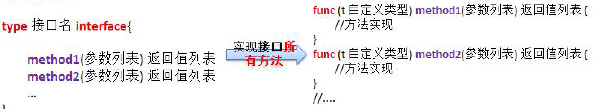
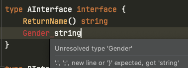
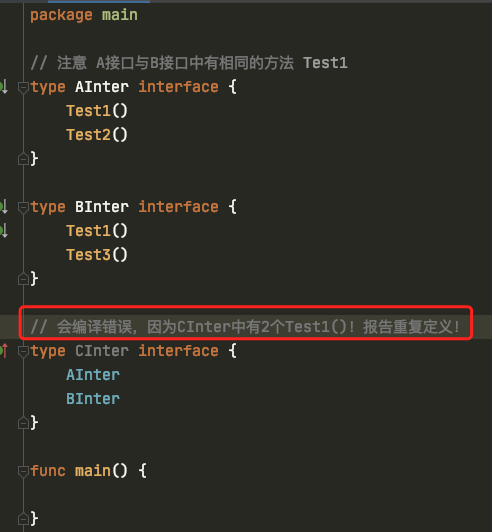

7 Go语言面向对象编程 *
7.1 Go语言面向对象
其他编程语言大多使用关键字“类”（class）来定义封装对象，表示该类的具体特征，然而Go并不是一个纯面向对象的编程语言。Go语言采用更灵活的“结构体”替代了“类”。
Go语言并没有提供类（class），但是它提供了结构体（struct），方法（method）可以在结构体上添加。与类相似，结构体提供了捆绑数据和方法的行为。
Go语言设计得非常简洁优雅，它没有沿袭传统面向对象编程中的诸多概念，比如继承、虚方法、构造方法和析构方法等。
虽然Go语言没有继承和多态，但是Go语言可以通过匿名字段实现继承，通过接口实现多态。在Go语言中学习面向对象，主要学习结构体（struct）、方法（method）、接口（interface）。
7.2 结构体 ***
单一的数据类型已经满足不了现实开发需求，于是 Go 语言提供了结构体来定义复杂的数据类型。结构体是由一系列相同类型或不同类型的数据构成的数据集合。
结构体的顶定义格式：
type 类型名 struct{
成员属性1 类型1
成员属性2 类型2
成员属性3,成员属性4 类型3
...
}
在使用结构体的过程中注意以下3点:
- 类型名是标识结构体的名称，在同一个包内不能重复。
- 结构体的属性，也叫字段，必须唯一。
- 同类型的成员属性可以写在一行。
结构体的初始化
结构体的定义只是一种内存布局的描述，只有当结构体实例化时，才会真正分配内存。因此只有在定义结构体并实例化后才能使用结构体。
实例化就是根据结构体定义的格式创建一份与格式一致的内存区域。结构体每个实例的内存是完全独立的。
package main
import "fmt"
// 定义Teacher结构体
type Teacher struct{
name string
age int8
sex byte
}
func main() {
// 1. var 声明方式实例化结构体，初始化方式为：对象.属性=值
var t1 Teacher
fmt.Printf("t1>>>%T, %v, %q \n",t1, t1, t1)//main.Teacher, { 0 0}, {"" '\x00' '\x00'}
t1.name = "wanghw"
t1.age = 28
t1.sex = 'M'
fmt.Printf("t1>>>%T, %v, %q \n",t1, t1, t1)//main.Teacher, {wanghw 28 77}, {"wanghw" '\x1c' 'M'}
// 2. 变量简短声明格式实例化结构体，初始化方式为：对象.属性=值
t2 := Teacher{}
t2.name = "Naruto"
t2.age = 22
t2.sex = 'M'
fmt.Printf("t2>>>%T, %v, %q \n",t2, t2, t2)//main.Teacher, {Naruto 22 77}, {"Naruto" '\x16' 'M'}
// 3. 变量简短声明格式实例化结构体，声明时初始化，初始化方式为：属性:值，属性:值可以同行，也可以换行（类似map的用法）
t3 := Teacher{
name: "Sasuke",
age: 23,
sex: 'M',
}
fmt.Printf("t3>>>%T, %v, %q \n",t3, t3, t3)//main.Teacher, {Sasuke 23 77}, {"Sasuke" '\x17' 'M'}
}
使用new()初始化结构体与结构体、数组、切片中的语法糖
语法糖（Syntactic Sugar），也译为糖衣语法，是由英国计算机科学家彼得·约翰·兰达（Peter J. Landin）发明的一个术语，指计算机语言中添加的某种语法，这种语法对语言的功能并没有影响，但是更方便程序员使用。
通常来说使用语法糖能够提升程序的可读性，从而减少程序代码出错的机会。结构体和数组中都有语法糖。
使用内置函数new()对结构体进行实例化，结构体实例化后形成指针类型的结构体，new()内置函数会分配内存。第一个参数是类型，而不是值，返回的值是指向该类型新分配的零值的指针。该函数用于创建某个类型的指针。
package main
import "fmt"
// 定义Teacher结构体
type Teacher struct{
name string
age int8
sex byte
}
func main() {
// 使用new()内置函数实例化struct
t1 := new(Teacher)
fmt.Printf("t1>>>%T, %v, %q \n",t1, t1, t1)//*main.Teacher, &{ 0 0}, &{"" '\x00' '\x00'}
(*t1).name = "wanghhonwei"
(*t1).age = 22
(*t1).sex = 'M'
fmt.Printf("t1>>>%T, %v, %q \n",t1, t1, t1)//*main.Teacher, &{wanghhonwei 22 77}, &{"wanghhonwei" '\x16' 'M'}
// 语法糖写法
t1.name = "Naruto"
t1.age = 28
t1.sex = 'M'
fmt.Println(t1)//&{Naruto 28 77}
// 数组与切片中的语法糖
SyntacticSugar()
}
func SyntacticSugar(){
// 数组中的语法糖
arr := [4]int{12,13,14,15}
arr2 := &arr
fmt.Println((*arr2)[len(arr)-1]) // 15
fmt.Println(arr2[0])//12
// 切片中的语法糖
arr3 := []int{100,200,300,400}
arr4 := &arr3
fmt.Println((*arr4)[len(arr)-1]) // 400
}
结构体是值类型
结构体作为函数参数，若复制一份传递到函数中，在函数中对参数进行修改，不会影响到实际参数，证明结构体是值类型。
package main
import "fmt"
// 定义Teacher结构体
type Teacher struct{
name string
age int8
sex byte
}
func main() {
// 1、初始化Teacher
t1 := Teacher{"wanghw",22,'M'}
fmt.Printf("t1:%T, %v, %p \n",t1, t1, &t1)//main.Teacher, {wanghw 22 77}, 0xc00005c420
// 2.复制结构体对象
t2 := t1
t2.name = "David"
t2.age = 21
t2.sex = 'M'
fmt.Printf("t2:%T, %v, %p \n",t2, t2, &t2)//main.Teacher, {David 21 77}, 0xc00005a4a0
// 3.结构体对象作为参数传递，修改t2的name ———— 实际上不会改变t2的name的值！
changeName(t2)
// 再打印一下t1 与t2
fmt.Printf("t1:%T, %v, %p \n",t1, t1, &t1)//main.Teacher, {wanghw 22 77}, 0xc00005a420
fmt.Printf("t2:%T, %v, %p \n",t2, t2, &t2)//main.Teacher, {David 21 77}, 0xc00005a4a0
}
func changeName(t Teacher){
t.name = "Sasuke"
fmt.Printf("在changeName函数内部的t:%T, %v, %p \n",t, t, &t)//main.Teacher, {Sasuke 21 77}, 0xc00005a500
}
结构体的深拷贝与浅拷贝
值类型是深拷贝，深拷贝就是为新的对象分配了内存。引用类型是浅拷贝，浅拷贝只是复制了对象的指针。
结构体的拷贝实例：
package main
import "fmt"
// 定义Teacher结构体
type Dog struct {
name string
color string
age int8
kind string
}
func main() {
//1 实现结构体深拷贝
//struct 是值类型，默认复制就是深拷贝
fmt.Println("结构体的深拷贝：")
d1 := Dog{"豆豆","black",2,"二哈"}
fmt.Printf("d1:%T, %v, %p \n",d1, d1, &d1)//main.Dog, {豆豆 black 2 二哈}, 0xc00001c180
d2 := d1 // 深拷贝
fmt.Printf("d2:%T, %v, %p \n",d2, d2, &d2)//main.Dog, {豆豆 black 2 二哈}, 0xc00001c240
d2.name = "毛毛"
fmt.Printf("d2修改后:%T, %v, %p \n",d2, d2, &d2)//main.Dog, {毛毛 black 2 二哈}, 0xc00001c240
fmt.Printf("d1:%T, %v, %p \n",d1, d1, &d1)//main.Dog, {豆豆 black 2 二哈}, 0xc00001c180
//2 实现结构体的浅拷贝（1）:直接赋值指针地址
fmt.Println("结构体的浅拷贝（1）：")
d3 := &d1
fmt.Printf("d3:%T, %v, %p \n",d3, d3, &d3)//*main.Dog, &{豆豆 black 2 二哈}, 0xc000006030
d3.name = "球球"
d3.age = 1
d3.color = "white"
d3.kind = "萨摩耶"
fmt.Printf("d3修改后:%T, %v, %p \n",d3, d3, &d3)//修改后:*main.Dog, &{球球 white 1 萨摩耶}, 0xc000006030
fmt.Printf("d1:%T, %v, %p \n",d1, d1, &d1)//main.Dog, {球球 white 1 萨摩耶}, 0xc00001c180
//3 实现结构体的浅拷贝（2）:通过new()函数来实例化对象
fmt.Println("结构体的浅拷贝（2）：")
d4 := new(Dog)
d4.name = "多多"
d4.age = 1
d4.color = "white"
d4.kind = "二哈"
d5 := d4
fmt.Printf("d4:%T, %v, %p \n",d4, d4, &d4)//*main.Dog, &{多多 white 1 二哈}, 0xc000006038
fmt.Printf("d5:%T, %v, %p \n",d5, d5, &d5)//*main.Dog, &{多多 white 1 二哈}, 0xc000006040
// 修改d5
d5.name = "嘻嘻"
d5.color = "black"
fmt.Printf("d5修改后:%T, %v, %p \n",d5, d5, &d5)//*main.Dog, &{嘻嘻 black 1 二哈}, 0xc000006040
fmt.Printf("d4:%T, %v, %p \n",d4, d4, &d4)//*main.Dog, &{嘻嘻 black 1 二哈}, 0xc000006038
}
结构体作为函数的参数及返回值
结构体作为函数的参数及返回值有两种形式：值传递和引用传递：
package main
import "fmt"
type Flower struct{
name, color string
}
func main(){
// 1. 结构体作为参数的用法
f1 := Flower{"玫瑰","红"}
fmt.Printf("f1: %T, %v, %p \n", f1, f1, &f1)
fmt.Println("-----------------------")
// 将结构体对象作为参数
changeInfo1(f1)
fmt.Printf("f1: %T, %v, %p \n", f1, f1, &f1)
fmt.Println("-----------------------")
// 将结构体指针作为参数
changeInfo2(&f1)
fmt.Printf("f1: %T, %v, %p \n", f1, f1, &f1)
fmt.Println("-----------------------")
// 2. 结构体作为返回值的用法
// 结构体对象作为返回值
f2 := getFlower1()
f3 := getFlower1()
fmt.Println("更改前：",f2, f3)
fmt.Printf("f2地址为：%p，f3地址为%p\n",&f2,&f3) // 地址发生变化，对象发生了复制
f2.name = "杏花"
fmt.Println("更改后：",f2, f3)
// 结构体指针作为返回值
f4 := getFlower2()
f5 := getFlower2()
fmt.Println("更改前：",f4, f5)
f4.name = "桃花"
fmt.Println("更改后：",f4, f5)
}
// 返回结构体对象
func getFlower1()(f Flower){
f = Flower{"牡丹","白"}
fmt.Printf("函数 getFlower1内f：%T, %v, %p \n", f, f, &f)
return
}
// 返回结构体指针
func getFlower2()(f *Flower){
//f = &Flower{"芙蓉","红"}
temp := Flower{"芙蓉","红"}
fmt.Printf("函数 getFlower2内temp：%T, %v, %p \n", temp, temp, &temp)
f = &temp
fmt.Printf("函数 getFlower2内f：%T, %v, %p \n", f, f, &f)
return
}
// 传结构体对象
func changeInfo1(f Flower){
f.name = "月季"
f.color = "粉"
fmt.Printf("函数 changeInfo1内f：%T, %v, %p \n", f, f, &f)
}
// 传结构体指针
func changeInfo2(f *Flower){
f.name = "蔷薇"
f.color = "紫"
fmt.Printf("函数 changeInfo2内f：%T, %v, %p \n", f, f, &f)
}
/*
f1: main.Flower, {玫瑰 红}, 0xc00005a420
-----------------------
函数 changeInfo1内f：main.Flower, {月季 粉}, 0xc00005a4a0
f1: main.Flower, {玫瑰 红}, 0xc00005a420
-----------------------
函数 changeInfo2内f：*main.Flower, &{蔷薇 紫}, 0xc000090020
f1: main.Flower, {蔷薇 紫}, 0xc00005a420
-----------------------
函数 getFlower1内f：main.Flower, {牡丹 白}, 0xc00005a5c0
函数 getFlower1内f：main.Flower, {牡丹 白}, 0xc00005a640
更改前： {牡丹 白} {牡丹 白}
f2地址为：0xc00005a5a0，f3地址为0xc00005a620
更改后： {杏花 白} {牡丹 白}
函数 getFlower2内temp：main.Flower, {芙蓉 红}, 0xc00005a720
函数 getFlower2内f：*main.Flower, &{芙蓉 红}, 0xc000090028
函数 getFlower2内temp：main.Flower, {芙蓉 红}, 0xc00005a7a0
函数 getFlower2内f：*main.Flower, &{芙蓉 红}, 0xc000090030
更改前： &{芙蓉 红} &{芙蓉 红}
更改后： &{桃花 红} &{芙蓉 红}
*/
匿名结构体和与结构体的匿名字段
1. 匿名结构体
匿名结构体就是没有名字的结构体，无须通过type关键字定义就可以直接使用。创建匿名结构体时，同时要创建对象。
匿名结构体由结构体定义和键值对初始化两部分组成：
变量名 := struct {
// 定义成员属性
}{
// 初始化成员属性
}
package main
import (
"fmt"
"math"
)
func main(){
// 匿名函数
res := func(a, b float64) float64{
return math.Pow(a,b)
}(2,4)
fmt.Println(res)
// 匿名结构体
addr := struct{
province, city string
}{"四川省","成都市"}
fmt.Println(addr)
cat := struct {
name, color string
age int8
}{name:"花花",color:"black",age:1}
fmt.Println(cat)
}
/*
16
{四川省 成都市}
{花花 black 1}
*/
2. 结构体的匿名字段
匿名字段就是在结构体中的字段没有名字，只包含一个没有字段名的类型。这些字段被称为匿名字段。
如果字段没有名字，那么默认使用类型作为字段名，同一个类型只能有一个匿名字段。结构体嵌套中采用匿名结构体字段可以模拟继承关系。
package main
import "fmt"
type User struct {
string
byte
int8
float64
}
func main(){
// 实例化结构体
user := User{"Steven",'M',35,178.2}
fmt.Println(user)
//依次输出姓名、性别、年龄、身高
fmt.Printf("姓名：%s \n",user.string)
fmt.Printf("性别：%c \n",user.byte)
fmt.Printf("年龄：%d \n",user.int8)
fmt.Printf("身高：%.2f \n",user.float64)
}
/*
{Steven 77 35 178.2}
姓名：Steven
性别：M
年龄：35
身高：178.20
*/
结构体嵌套
将一个结构体作为另一个结构体的属性（字段），这种结构就是结构体嵌套。
结构体嵌套可以模拟面向对象编程中的以下两种关系：
- 聚合关系：一个类作为另一个类的属性。
- 继承关系：一个类作为另一个类的子类。子类和父类的关系。
聚合关系
package main
import "fmt"
type Address struct{
province, city string
}
type Person struct{
name string
age int
address *Address
}
func main() {
// 模拟结构体对象之间的聚合关系
p := Person{}
p.name = "Wanghongwei"
p.age = 22
// 赋值方式1
addr := Address{
"Sichuan","成都",
}
p.address = &addr
fmt.Println(p) // {Wanghongwei 22 0xc00000c080}
fmt.Println("姓名:",p.name,"年龄:",p.age,"省:",p.address.province,"市:",p.address.city)
// 姓名: Wanghongwei 年龄: 22 省: Sichuan 市: 成都
// 修改Person对象的数据，会影响Address的数据！！！
p.address.province = "内蒙古"
p.address.city = "包头市"
// Person的数据
fmt.Println("姓名:",p.name,"年龄:",p.age,"省:",p.address.province,"市:",p.address.city)
// Address的数据
fmt.Println("addr中的省:",addr.province,"市:",addr.city) //addr中的省: 内蒙古 市: 包头市
// 修改Address中的数据，也会影响Person中的数据！！！
addr.province = "广东省"
addr.city = "深圳市"
fmt.Println("姓名:",p.name,"年龄:",p.age,"省:",p.address.province,"市:",p.address.city)
// 姓名: Wanghongwei 年龄: 22 省: 广东省 市: 深圳市
// 赋值方式2
p.address = &Address{
province: "陕西省",
city: "西安市",
}
fmt.Println(p)//{Wanghongwei 22 0xc0000a6060}
fmt.Println("姓名:",p.name,"年龄:",p.age,"省:",p.address.province,"市:",p.address.city)
// 姓名: Wanghongwei 年龄: 22 省: 陕西省 市: 西安市
}
继承关系
继承是传统面向对象编程的三大特征之一，用于描述两个类之间的关系。一个类（子类、派生类）继承自另一个类（父类、超类）。
子类可以有自己的属性和方法，也可以重写父类已有的方法。子类可以直接访问父类所有的属性和方法。
在结构体中，属于匿名结构体的字段称为提升字段，它们可以被访问，匿名结构体就像是该结构体的父类。
采用匿名字段的形式就是模拟继承关系。而模拟聚合关系时一定要采用有名字的结构体作为字段。
接下来通过一个案例来用结构体模拟继承关系：
package main
import "fmt"
type Person struct {
name,gender string
age int
}
type Student struct{
Person
schoolName string
}
func main(){
// 1. 实例化并初始化Person
p1 := Person{"WangHongWei","Male",22}
fmt.Println(p1) //{WangHongWei Male 22}
// 2. 实力话并初始化Student
// 写法1：
s1 := Student{p1,"西南交通大学"}
printInfo(s1)
/*
{{WangHongWei Male 22} 西南交通大学}
{Person:{name:WangHongWei gender:Male age:22} schoolName:西南交通大学}
姓名:WangHongWei, 年龄:22, 性别:Male, 学校:西南交通大学
*/
// 写法2：
s2 := Student{Person{"Josh","Male",23},"Method"}
printInfo(s2)
/*
{{Josh Male 23} Method}
{Person:{name:Josh gender:Male age:23} schoolName:Method}
姓名:Josh, 年龄:23, 性别:Male, 学校:Method
*/
// 写法3：
s3 := Student{
Person: Person{"Naruto","Male",25},
schoolName: "木叶学校",
}
printInfo(s3)
/*
{{Naruto Male 25} 木叶学校}
{Person:{name:Naruto gender:Male age:25} schoolName:木叶学校}
姓名:Naruto, 年龄:25, 性别:Male, 学校:木叶学校
*/
// 写法4：
s4 := Student{}
s4.name = "Sasuke"
s4.gender = "Male"
s4.age = 25
s4.schoolName = "大蛇丸研究室"
printInfo(s4)
/*
{{Sasuke Male 25} 大蛇丸研究室}
{Person:{name:Sasuke gender:Male age:25} schoolName:大蛇丸研究室}
姓名:Sasuke, 年龄:25, 性别:Male, 学校:大蛇丸研究室
*/
}
func printInfo(s Student){
fmt.Println(s)
fmt.Printf("%+v \n", s)
fmt.Printf("姓名:%s, 年龄:%d, 性别:%s, 学校:%s \n",s.name,s.age,s.gender,s.schoolName)
}
尽量避免结构体嵌套时出现相同的成员名
结构体嵌套时，可能存在相同的成员名，成员重名会导致成员名字冲突！需要使用下面方式：
package main
import "fmt"
type A struct {
a, b int
}
type B struct {
a, d int
}
// C继承A与B
type C struct {
A
B
}
func main(){
c := C{}
c.A.a = 1
c.B.a = 2 // 如果调用 c.a = 2 ，会提示 "引起歧义的参数"！！！
c.b = 3
c.d = 4
fmt.Println(c) //{{1 3} {2 4}}
}
当重名时，编译器会报错：Ambiguous reference。
7.3 方法 ***
方法的概念
Go语言同时有函数和方法，方法的本质是函数，但是方法和函数又有所不同。
1. 含义不同
函数（function）是一段具有独立功能的代码，可以被反复多次调用，从而实现代码复用。而方法（method）是一个类的行为功能，只有该类的对象才能调用。
2. 方法有接受者，而函数无接受者
Go语言的方法（method）是一种作用于特定类型变量的函数。这种特定类型变量叫作接受者（receiver）。接受者的概念类似于传统面向对象语言中的this或self关键字。
Go语言的接受者强调了方法具有作用对象，而函数没有作用对象。一个方法就是一个包含了接受者的函数。
Go语言中，接受者可以是结构体，也可以是结构体类型外的其他任何类型。
3. 函数不可以重名，而方法可以重名
只要接受者不同，方法名就可以相同。
基本语法
func (接受者变量 接受者类型) 方法名(参数列表) (返回值列表){
// 方法体
}
接受者在func关键字和方法名之间编写，接受者可以是struct类型或非struct类型，可以是指针类型或非指针类型。
接受者中的变量在命名时，官方建议使用接受者类型的第一个小写字母。下面通过一个案例对比函数和方法在语法上的区别：
package main
import "fmt"
type Employee struct{
name, currency string
salary float64
}
func main(){
emp1 := Employee{"David","$",2000}
// 方法的调用
emp1.printSalary() //员工：David，薪资：$2000.00
// 调用函数
printSalary(emp1) //员工：David，薪资：$2000.00
}
// printSalary 方法
func (e Employee) printSalary(){
fmt.Printf("员工：%s，薪资：%s%.2f \n",e.name,e.currency,e.salary)
}
// printSalary 函数
func printSalary(e Employee){
fmt.Printf("员工：%s，薪资：%s%.2f \n",e.name,e.currency,e.salary)
}
方法和函数
一段程序可以用函数来写，却还要使用方法，主要有以下两个原因：
- Go不是一种纯粹面向对象的编程语言，它不支持类。因此其方法旨在实现类似于类的行为。
- 相同名称的方法可以在不同的类型上定义，而具有相同名称的函数是不允许的。假设有一个正方形和一个圆形，可以分别在正方形和圆形上定义一个名为Area的求取面积的方法。
下面通过一个案例来观察不同的结构体中相同的方法名：
相同方法名：
package main
import (
"fmt"
"math"
)
type Rectangle struct {
width, height float64
}
type Circle struct {
radius float64
}
func main(){
r1 := Rectangle{10,4}
c1 := Circle{1}
fmt.Println("r1的面积：",r1.Area())
fmt.Println("c1的面积：",c1.Area())
}
// 定义结构体Rectangle的 Area 方法
func (r Rectangle) Area() float64{
return r.width * r.height
}
// 定义结构体Circle的 Area方法
func (c Circle) Area() float64{
return c.radius * c.radius * math.Pi
}
指针作为接受者：
若方法的接受者不是指针，实际只是获取了一个拷贝，而不能真正改变接受者中原来的数据。当指针作为接受者时，情况如下：
package main
import "fmt"
type Rectangle struct {
width, height float64
}
func main() {
r1 := Rectangle{5,8}
r2 := r1
// 打印对象的内存地址
fmt.Printf("r1的地址：%p \n",&r1)//r1的地址：0xc0000b4010
fmt.Printf("r2的地址：%p \n",&r2)//r2的地址：0xc0000b4020
r1.setValue()//setValue方法中r的地址：0xc0000b4040
fmt.Println("r1.height=",r1.height)//8
fmt.Println("r2.height=",r2.height)//8
r1.setValue2()//setValue2方法中r的地址：0xc0000b4010
fmt.Println("r1.height=",r1.height)//666
fmt.Println("r2.height=",r2.height)//8
}
// 将结构体作为接受者 —— 不会改变原始数据
func (r Rectangle) setValue(){
fmt.Printf("setValue方法中r的地址：%p \n",&r)
r.height = 123
}
// 将指针作为接受者 —— 会改变原始数据 —— 注意r本身是一个指针
func (r *Rectangle) setValue2(){
fmt.Printf("setValue2方法中r的地址：%p \n",r)
r.height = 666
}
方法继承
方法是可以继承的，如果匿名字段实现了一个方法，那么包含这个匿名字段的struct也能调用该匿名字段中的方法。
package main
import "fmt"
type Human struct {
name, phone string
age int
}
type Student struct {
Human // 匿名字段
school string
}
type Employee struct {
Human // 匿名字段
company string
}
func main(){
s1 := Student{Human{"David","1553322xxxx",23},"xinan"}
e1 := Employee{Human{"Steven","1323344xxxx",22},"nanxi"}
// 调用父结构体的方法
s1.SayHi()
e1.SayHi()
}
func (h *Human) SayHi(){
fmt.Printf("在Human的SayHi方法中：我是 %s,联系方式是：%s,年龄是：%d \n",h.name,h.phone,h.age)
}
/*
在Human的SayHi方法中：我是 David,联系方式是：1553322xxxx,年龄是：23
在Human的SayHi方法中：我是 Steven,联系方式是：1323344xxxx,年龄是：22
*/
方法重写
在Go语言中，方法重写是指一个包含了匿名字段的struct也实现了该匿名字段实现的方法。
当结构体存在继承关系时，方法调用按照就近原则。
package main
import "fmt"
type Human struct {
name, phone string
age int
}
type Student struct {
Human // 匿名字段
school string
}
type Employee struct {
Human // 匿名字段
company string
}
func main(){
s1 := Student{Human{"David","1553322xxxx",23},"xinan"}
e1 := Employee{Human{"Steven","1323344xxxx",22},"nanxi"}
// 调用父结构体的方法
s1.SayHi()
e1.SayHi()
}
func (h *Human) SayHi(){
fmt.Printf("在Human的SayHi方法中：我是 %s,联系方式是：%s,年龄是：%d \n",h.name,h.phone,h.age)
}
func (s *Student) SayHi(){
fmt.Printf("在Student的SayHi方法中：我是 %s,联系方式是：%s,年龄是：%d \n",s.name,s.phone,s.age)
}
func (e Employee) SayHi(){
fmt.Printf("在Employee的SayHi方法中：我是 %s,联系方式是：%s,年龄是：%d \n",e.name,e.phone,e.age)
}
/*
在Student的SayHi方法中：我是 David,联系方式是：1553322xxxx,年龄是：23
在Employee的SayHi方法中：我是 Steven,联系方式是：1323344xxxx,年龄是：22
*/
7.4 接口 ***
概念及代码演示
面向对象语言中，接口用于定义对象的行为。接口只指定对象应该做什么，实现这种行为的方式（实现细节）由对象来决定。
在Go语言中，接口是一组方法签名。
接口指定了类型应该具有的方法，类型决定了如何实现这些方法。
当某个类型为接口中的所有方法提供了具体的实现细节时，这个类型就被称为实现了该接口。
接口定义了一组方法，如果某个对象实现了该接口的所有方法，则此对象就实现了该接口。
Go语言的类型都是隐式实现接口的。任何定义了接口中所有方法的类型都被称为隐式地实现了该接口。
接口的定义与实现
定义接口的语法格式如下：
type 接口名 interface {
方法1([参数列表]) [返回值]
方法2([参数列表]) [返回值]
...
方法n([参数列表]) [返回值]
}
实现接口方法的语法格式如下：
func (变量名 结构体类型) 方法1([参数列表]) [返回值] {
// 方法体
}
func (变量名 结构体类型) 方法2([参数列表]) [返回值] {
// 方法体
}
...
func (变量名 结构体类型) 方法n([参数列表]) [返回值] {
// 方法体
}
使用案例如下：
package main
import "fmt"
// 声明/定义一个接口
type Usb interface {
// 声明2个没有实现的方法
Start()
Stop()
}
// 1、Phone结构体
type Phone struct {
}
// 让Phone实现Usb接口的方法
func (p *Phone) Start() {
fmt.Println("手机开始工作...")
}
func (p *Phone) Stop() {
fmt.Println("手机停止工作...")
}
// 2、Camera结构体
type Camera struct {
}
// 让Camera实现Usb接口的方法
func (c *Camera) Start() {
fmt.Println("相机开始工作...")
}
func (c *Camera) Stop() {
fmt.Println("相机停止工作...")
}
// 3、计算机结构体 ***
type Computer struct {
}
// 编写一个方法Working，接收一个Usb接口类型变量
// 只要是实现了Usb接口（所谓实现Usb接口其实就是实现了Usb接口声明的"所有方法"）
func (c Computer) Working(u Usb) { // u变量或根据传入的实参，来判断到底是Phone还是Camera
// 通过u接口变量来调用Start与Stop方法
u.Start()
u.Stop()
}
func main() {
// 先创建结构体变量
computerObj := Computer{}
phoneObj := Phone{}
cameraObj := Camera{}
// 关键点
computerObj.Working(&phoneObj)
computerObj.Working(&cameraObj)
/*
手机开始工作...
手机停止工作...
相机开始工作...
相机停止工作...
*/
}
接口的说明 *
interface类型可以定义一组方法，但是这些不需要实现。并且interface不能包含任何变量。到某个自定义类型（比如结构体Phone）要使用的时候，在根据具体情况把这些方法写出来（实现接口）。

（1）接口里的所有方法都没有方法体，即接口的方法都是没有实现的方法。接口体现了程序设计的多态和高内聚低耦合的思想。
（2）Golang中的接口，不需要显式的实现。只要一个变量（比如结构体变量），含有接口类型中的方法，那么这个变量就实现了这个接口。
（3）接口本身不能创建实例，但是可以指向一个实现了该接口的自定义类型的变量（实例）：
package main
import "fmt"
type AInterface interface {
Say() string
}
// 定义一个结构体实现上面的接口
type Student struct {
Name string
}
func (s *Student) Say() string{
return fmt.Sprintf("My name is %s \n",s.Name)
}
func main() {
stuObj := Student{
Name: "Naruto",
}
// 指向实现该接口的变量 特别注意！右边字面量必须是一个指针！因为实现的时候传入的是 *Stucent~~
var s AInterface = &stuObj
ret := s.Say()
fmt.Println("ret>>> ",ret) // My name is Naruto
}
（4）在Golang中，一个自定义类型需要将某个接口所有方法都实现，我们说这个自定义类型实现了该接口。
（5）一个自定义类型只有实现了某个接口，才能将该自定义类型的实例（变量）赋值给接口类型！
（6）只要是自定义数据类型就可以实现接口，不仅仅是结构体类型。
package main
import "fmt"
type AInterface interface {
Say() string
}
// 自定义数据类型实现接口
type integer int
func (i *integer) Say() string{
return fmt.Sprintf("say:%d \n",*i) // 注意传入的是指针，这里需要用*去取值！
}
func main() {
var i integer = 10
var b AInterface = &i
ret := b.Say()
fmt.Println("ret>>> ",ret) // say:10
}
（7）一个自定义类型可以实现多个接口
package main
import "fmt"
type AInterface interface {
ReturnName() string
}
type BInterface interface {
ReturnAge() string
}
type Monster struct {
Name string
Age int
}
// 实现接口A
func (m *Monster) ReturnName() string{
return fmt.Sprintf("name:%s \n",m.Name)
}
// 实现接口B
func (m *Monster) ReturnAge() string{
return fmt.Sprintf("age:%d \n",m.Age)
}
func main() {
mObj := Monster{
Name: "Naruto",
Age: 22,
}
// 赋值给不同类型的接口
var aObj AInterface = &mObj
var bObj BInterface = &mObj
// 结果
ret1 := aObj.ReturnName()
fmt.Println("ret1>>> ",ret1)//name:Naruto
ret2 := bObj.ReturnAge()
fmt.Println("ret2>>> ",ret2)//age:22
}
（8）Golang接口中不能有任何变量：

（9）一个接口（比如A接口）可以继承多个别的接口（比如B、C接口），这时如果要实现A接口，也必须将B、C接口的方法也全部实现！
package main
import "fmt"
// 父级结构体
type BInter interface {
testB()
}
type CInter interface {
testC()
}
// 继承
type AInter interface {
BInter
CInter
testA()
}
// 如果需要实现A接口，那必须将B与C接口同时都实现了！！！
type Stu struct{
Name string
}
func (s *Stu) testA(){
fmt.Println("实现了A...")
}
func (s *Stu) testB(){
fmt.Println("实现了B...")
}
func (s *Stu) testC(){
fmt.Println("实现了C...")
}
func main() {
stuObj := Stu{
Name: "wanghw",
}
// 接收
var a AInter = &stuObj
a.testA()
a.testB()
a.testC()
/*
实现了A...
实现了B...
实现了C...
*/
}
（10）interface类型默认是一个指针（引用类型），如果没有对interface初始化就使用的话，那么会输出nil。
2个特殊例子*
（1）一个自定义类型可以实现多个接口，接口之间可以有相同的方法：
package main
import "fmt"
// 注意 A接口与B接口中有相同的方法 Test1
type AInter interface {
Test1()
Test2()
}
type BInter interface {
Test1()
Test3()
}
type Student struct {
Name string
}
// 同时实现A接口与B接口
func(s *Student) Test1(){
fmt.Println("Student实现了Test1方法")
}
func(s *Student) Test2(){
fmt.Println("Student实现了Test2方法")
}
func(s *Student) Test3(){
fmt.Println("Student实现了Test3方法")
}
func main() {
stuObj := Student{
Name: "wanghw",
}
var A AInter = &stuObj
var B BInter = &stuObj
A.Test1()//Student实现了Test1方法
A.Test2()//Student实现了Test2方法
B.Test1()//Student实现了Test1方法
B.Test3()//Student实现了Test3方法
}
（2）接口继承的情况下，如果两个基类中有相同的方法，这样不行！会报错！

接口编程的最佳实践*
实现对Hero结构体切片的排序：sort.Sort(data Interface)
package main
import (
"fmt"
"math/rand"
"sort"
)
////// 源码实现思路
// 1、声明Hero结构体
type Hero struct {
Name string
Age int
}
// 2、声明一个Hero结构体切片类型
type HeroSlice []Hero
// 3、实现interface接口
func (hs HeroSlice) Len() int{
return len(hs)
}
/// Less 方法就是决定我们使用什么标准进行排序
// 1. 按照Hero的年龄从小到大排序
func (hs HeroSlice) Less(i, j int)bool{
return hs[i].Age < hs[j].Age
// 修改成 对Name的排序
// return hs[i].Name < hs[j].Name
}
// 数据交换
func (hs HeroSlice) Swap(i, j int){
hs[i], hs[j] = hs[j], hs[i]
}
func main() {
// TODO 测试系统排序的方法
//先定义一个数组/切片
var intSlice = []int{0, -1, 10, 7, 90}
//要求对 intSlice切片进行排序
// 使用系统提供的方法
sort.Ints(intSlice) // 从小到大
fmt.Println(intSlice) // [-1 0 7 10 90]
//测试看看我们是否可以对结构体切片进行排序
var heroes HeroSlice
for i := 0; i < 10 ; i++ {
hero := Hero{
Name : fmt.Sprintf("英雄|%d", rand.Intn(100)),
Age : rand.Intn(100),
}
//将 hero append到 heroes切片
heroes = append(heroes, hero)
}
//看看排序前的顺序
fmt.Println("-----------排序前------------")
for _ , v := range heroes {
fmt.Println(v)
}
//调用sort.Sort
sort.Sort(heroes)
fmt.Println("-----------排序后------------")
//看看排序后的顺序
for _ , v := range heroes {
fmt.Println(v)
}
}
实现接口 VS 继承 *
实现接口可以说是对继承的一种补充！
（1）当A结构体继承了B结构体，那么A结构体就自动继承了B结构体的字段跟方法，并且可以直接使用。
（2）当A结构体需要扩展，同时不希望破坏继承关系，则可以取实现某个接口！
package main
import (
"fmt"
)
// 父级Monkey结构体
type Monkey struct {
Name string
}
// Monkey的方法
func (m *Monkey) climbing(){
fmt.Println("生来会爬树...")
}
// 声明2个接口 ———— 定义拓展方法
type BirdAble interface {
Flying()
}
type FishAble interface {
Swinging()
}
// 子类：LittleMonkey结构体
type LittleMonkey struct {
Monkey // 继承
}
// 让子类实现两个接口的拓展方法
func (l *LittleMonkey) Flying(){
fmt.Println("通过学习，学会了飞...")
}
func (l *LittleMonkey) Swinging(){
fmt.Println("通过学习，学会了游泳...")
}
func main() {
// 创建一个LittleMonkey实例
LittleMonkeyObj := LittleMonkey{
Monkey{
Name: "孙悟空",
},
}
// 这样：子类既有了父类的方法，也有了自己拓展的方法
LittleMonkeyObj.climbing()
LittleMonkeyObj.Flying()
LittleMonkeyObj.Swinging()
/*
生来会爬树...
通过学习，学会了飞...
通过学习，学会了游泳...
*/
}
duck typing
Go没有implements或extends关键字，这类编程语言叫作duck typing编程语言。
1. 大黄鸭玩具不是鸭子
生活中的大黄鸭，只是一个塑料玩具。
从生物学角度看，鸭子属于脊索动物门、脊椎动物亚门、鸟纲、雁形目。大黄鸭没有生命，所以不是鸭子。
2. duck typing
duck typing是描述事物的外部行为而非内部结构。“一只鸟走起来像鸭子，游泳像鸭子，叫起来也像鸭子，那么这只鸟就可以被称为鸭子。”扩展后，可以将其理解为：“一只鸟看起来像鸭子，那么它就是鸭子。”
duck typing关注的不是对象的类型本身，而是它是如何使用的。
3. duck typing编程语言
使用duck typing的编程语言往往被归类为“动态类型语言”或者“解释型语言”，如Python、Javascript、Ruby等；而非duck typing编程语言往往被归为“静态类型语言”，如C、C++、Java等。
4. 非duck typing编程语言
以Java为例，一个类必须显式地声明“类实现了某个接口”，然后才能用在这个接口可以使用的地方。如果有一个第三方的Java库，这个库中的某个类没有声明它实现了某个接口，那么即使这个类中真的有那些接口中的方法，也不能把这个类的对象用在那些要求用接口的地方。但在duck typing编程语言中就可以这样做，因为它不要求一个类显式地声明它实现了某个接口。
5. 动态类型语言的优缺点
动态类型语言的好处很多，Python代码写起来很快。但是缺陷也是显而易见的：错误往往要在运行时才能被发现。相反，静态类型语言往往在编译时就发现这类错误：如果某个变量的类型没有显式地声明实现了某个接口，那么，这个变量就不能用在一个要求实现了这个接口的地方。
6. Go的处理方式
Go类型系统采取了折中的办法，其做法如下：
- 第一，结构体类型T不需要显式地声明它实现了接口I。只要类型T实现了接口I规定的所有方法，它就自动地实现了接口I。这样就像动态类型语言一样省了很多代码，少了许多限制。
- 第二，将结构体类型的变量显式或者隐式地转换为接口I类型的变量i。这样就可以和其他静态类型语言一样，在编译时检查参数的合法性。
接下来我们通过一个案例加深对duck typing的理解：
package main
import "fmt"
type ISayHello interface {
SayHello() string
}
type Duck struct {
name string
}
type Person struct {
name string
}
func (d Duck) SayHello() string{
return d.name + "叫：ga ga ga!"
}
func (p Person) SayHello() string{
return p.name + "说：你好！"
}
func main() {
// 定义实现接口的对象
duck := Duck{"DaHuangYa"}
person := Person{"Jonson"}
fmt.Println(duck.SayHello())// DaHuangYa叫：ga ga ga!
fmt.Println(person.SayHello())// Jonson说：你好！
// 定义接口类型的变量
var i ISayHello
i = duck
fmt.Printf("%T, %v, %p \n",i, i, &i)//main.Duck, {DaHuangYa}, 0xc00008e200
fmt.Println(i.SayHello())//DaHuangYa叫：ga ga ga!
i = person
fmt.Printf("%T, %v, %p \n",i, i, &i)//main.Person, {Jonson}, 0xc000010220
fmt.Println(i.SayHello())//Jonson说：你好！
}
可以看出，一个函数如果接受接口类型作为参数，那么实际上它可以传入该接口的任意一个实现类的对象作为参数。定义一个接口变量，实际上可以赋值给任意一个实现了该接口的对象。
如果定义了一个接口类型的容器（数组或切片），实际上该容器可以存储任意一个实现类对象。
多态
如果有几个相似而不完全相同的对象，有时人们要求在向它们发出同一个消息时，它们的反应各不相同，分别执行不同的操作。这种情况就是多态现象。例如，甲、乙、丙三个班都是初中一年级，学生们有基本相同的属性和行为，在同时听到上课铃声的时候，他们会分别走向三个不同的教室，而不会走向同一个教室。
多态就是事物的多种形态，Go语言中的多态性是在接口的帮助下实现的——定义接口类型，创建实现该接口的结构体对象。
定义接口类型的对象，可以保存实现该接口的任何类型的值。Go语言接口变量的这个特性实现了Go语言中的多态性。接口类型的对象，不能访问其实现类中的属性字段。
解释多态现象的案例*
package main
import "fmt"
type Income interface {
calculate() float64 // 计算收入总额
source() string // 用来说明收入来源
}
//固定账单项目
type FixedBilling struct {
projectName string // 工程项目
biddedAmount float64 // 项目招标总额
}
//定时生产项目（定时和材料项目）
type TimeAndMaterial struct {
projectName string
workHours float64 // 工作时长
hourlyRate float64 // 每小时效率
}
//固定账单项目实现接口
func (f FixedBilling) calculate() float64{
return f.biddedAmount
}
func (f FixedBilling) source() string{
return f.projectName
}
//定时收入项目实现接口
func (t TimeAndMaterial) calculate() float64{
return t.workHours * t.hourlyRate
}
func (t TimeAndMaterial) source() string{
return t.projectName
}
// 通过广告点击获得收入
type Advertisement struct {
adName string
clickCount int
incomePerclick float64 // 平均点击量
}
// 通过广告点击获得收入 实现接口
func (a Advertisement) calculate() float64{
return float64(a.clickCount) * a.incomePerclick
}
func (a Advertisement) source() string{
return a.adName
}
func main() {
p1 := FixedBilling{"项目1",5000}
p2 := FixedBilling{"项目2",8000}
p3 := TimeAndMaterial{"项目3",100,40}
p4 := TimeAndMaterial{"项目4",200,30}
p5 := Advertisement{"广告1",10000,0.1}
p6 := Advertisement{"广告2",20000,0.05}
ic := []Income{p1,p2,p3,p4,p5,p6}
fmt.Println("净收入为：",calculateNetIncome(ic))
}
// 计算净收入
func calculateNetIncome(ic []Income) float64{
netincome := 0.0
for _, income := range ic{
fmt.Printf("收入来源：%s, 收入金额：%.2f \n",income.source(),income.calculate())
netincome += income.calculate()
}
return netincome
}
/*
收入来源：项目1, 收入金额：5000.00
收入来源：项目2, 收入金额：8000.00
收入来源：项目3, 收入金额：4000.00
收入来源：项目4, 收入金额：6000.00
收入来源：广告1, 收入金额：1000.00
收入来源：广告2, 收入金额：1000.00
净收入为： 25000
*/
可以看出，尽管添加了新的收入方式，但没有对calculateNetIncome()函数做任何更改，全靠多态性起作用。
由于新的Advertisement类型也实现了Income接口，可以将它添加到ic切片中。
CalculateNetIncome()函数在没有任何更改的情况下工作，因为它可以调用Advertisement类型的calculate()和source()方法。
接口体现多态的两种形式 *
1、多态参数
在前面的Usb接口案例，usb Usb既可以接收手机变量，又可以接收相机变量，体现了Usb接口的多态参数。
2、多态数组
演示一个案例：给Usb数组中存放Phone结构体与Camera结构体变量：
package main
import "fmt"
// 声明一个接口
type Usb interface {
Start()
Stop()
}
// 1、Phone结构体
type Phone struct {
Name string
}
// 让Phone实现Usb接口的方法
func (p *Phone) Start() {
fmt.Println("手机开始工作...")
}
func (p *Phone) Stop() {
fmt.Println("手机停止工作...")
}
// 2、Camera结构体
type Camera struct {
Name string
}
// 让Camera实现Usb接口的方法
func (c *Camera) Start() {
fmt.Println("相机开始工作...")
}
func (c *Camera) Stop() {
fmt.Println("相机停止工作...")
}
func main() {
// 定义一个Usb结构体的数组，可以存放Phone和Camera的结构体变量
// 这里就体现了一个多态数组
var usbArr [3]Usb
// 注意这里传：结构体指针！！！
usbArr[0] = &Phone{"Vivo"}
usbArr[1] = &Phone{"小米"}
usbArr[2] = &Camera{"尼康"}
for _, usbObj := range usbArr{
fmt.Println(usbObj)
}
/*
&{Vivo}
&{小米}
&{尼康}
*/
}
空接口 *
空接口中没有任何方法。任意类型都可以实现该接口。空接口这样定义：interface{}，也就是包含0个方法（method）的interface。空接口可表示任意数据类型，类似于Java中的object。
空接口常用于以下情形：
- println的参数就是空接口。
- 定义一个map：key是string，value是任意数据类型。
- 定义一个切片，其中存储任意类型的数据！！！
空接口的使用方式：
package main
import "fmt"
type A interface {
}
type Cat struct {
name string
age int
}
type Person struct {
name string
gender string
}
func main() {
var a1 A = Cat{"Mimi",1}
var a2 A = Person{"Steven","Male"}
var a3 A = "Learn golang with me!"
var a4 A = 100
var a5 A = 3.1415926
showInfo(a1)//main.Cat, {Mimi 1}
showInfo(a2)//main.Person, {Steven Male}
showInfo(a3)//string, Learn golang with me!
showInfo(a4)//int, 100
showInfo(a5)//float64, 3.1415926
// 1. fmt.Println() 参数就是空接口
fmt.Println("Pringln的参数就是空接口,可以是任何类型的数据！",100,2.12,Cat{"Mini2",2})
/* Pringln的参数就是空接口,可以是任何类型的数据！ 100 2.12 {Mini2 2} */
// 2. 定义map,value是任何类型的数据
map1 := make(map[string]interface{})
map1["name"] = "whw"
map1["age"] = 22
map1["height"] = 1.71
fmt.Println(map1) //map[age:22 height:1.71 name:whw]
// 3.定义一个切片，其中存储任意类型的数据 !!!!!
slice := make([]interface{},0,10)
slice = append(slice,a1,a2,a3,a4,a5)
fmt.Println(slice) //[{Mimi 1} {Steven Male} Learn golang with me! 100 3.1415926]
}
func showInfo(a A){
fmt.Printf("%T, %v \n",a,a)
}
在上例中，变量a1、a2、a3、a4、a5分别为不同类型的变量，它们均可以存放在空接口中使用。
空接口 interface{} 没有任何方法，*所以所有类型都实现了空接口，即我们可以把任何一个变量赋值给空接口。
package main
import "fmt"
// 定义一个空接口
type T interface {
}
type Student struct {
Name string
}
func main() {
stuObj := Student{
Name: "wanghw",
}
var t1 T = stuObj
fmt.Println(t1)//{wanghw}
// 可以重复赋值
var t2 T = stuObj
t2 = 10.12
t1 = "hhh"
fmt.Println(t1,t2)//hhh 10.12
}
7.5 类型断言/接口对象转型 *
第一种实现方式
instance, ok := 接口对象.(实际类型)
如果该接口对象是对应的实际类型，那么instance就是转型之后的对象，ok的值为true，配合if ... else if...语句使用。
第二种实现方式
接口对象.[type]
此方式配合switch...case语句使用。
最佳实践一：循环判断传入参数的类型
接下来通过一个案例实现接口对象转型（注意三角形Triangle结构体的那个系统接口）：
package main
import (
"fmt"
"math"
)
// 1.定义接口 计算周长与面积
type Shape interface {
perimeter() float64
area() float64
}
// 2.矩形
type Rectangle struct {
a, b float64
}
// 3.三角形
type Triangle struct {
a, b, c float64
}
// 4.圆形
type Circle struct {
radius float64
}
// 定义实现接口的方法
// 矩形的周长与面积
func (r Rectangle) perimeter() float64{
return (r.a + r.b) * 2
}
func (r Rectangle) area() float64 {
return r.a * r.b
}
//三角形的周长与面积
func (t Triangle) perimeter() float64{
return t.a + t.b + t.c
}
func (t Triangle) area() float64{
// 海伦公式
p := t.perimeter() / 2 //半周长
return math.Sqrt(p*(p-t.a) * (p-t.b) * (p-t.c))
}
//圆形的周长与面积
func (c Circle) perimeter() float64{
return 2 * math.Pi * c.radius
}
func (c Circle) area() float64{
return math.Pow(c.radius,2) * math.Pi
}
// 接口对象转型方式1：instance, ok := 接口对象.(实际类型)
func getType(s Shape){
if instance, ok := s.(Rectangle);ok{
fmt.Printf("矩形：长度为%.2f，宽度为%.2f \n",instance.a,instance.b)
}else if instance, ok := s.(Triangle);ok{
fmt.Printf("三角形形：三条边分别为%.2f，%.2f，%.2f \n",instance.a,instance.b,instance.c)
}else if instance, ok := s.(Circle);ok{
fmt.Printf("圆形：半径为%.2f \n",instance.radius)
}
}
// 接口对象转型方式2：接口对象.(type),配合switch...case语句使用
func getType2(s Shape){
switch instance := s.(type) {
case Rectangle:
fmt.Printf("矩形：长度为%.2f，宽度为%.2f \n", instance.a, instance.b)
case Triangle:
fmt.Printf("三角形：三条边分别为%.2f，%.2f，%.2f \n",instance.a,instance.b,instance.c)
case Circle:
fmt.Printf("圆形：半径为%.2f \n",instance.radius)
}
}
func main() {
var s Shape
s = Rectangle{22,33}
getResult(s)
showInfo(s)
s = Triangle{3,4,5}
getResult(s)
showInfo(s)
s = Circle{1}
getResult(s)
showInfo(s)
x := Triangle{3,4,5}
fmt.Println(x)
}
func getResult(s Shape){
//getType(s)
getType2(s)
fmt.Printf("getResult函数中～周长：%.2f，面积：%.2f \n", s.perimeter(),s.area())
}
// 实现了系统接口，最后的打印会改变
func (t Triangle) String() string{
return fmt.Sprintf("Triangle对象，属性分别是：%.2f, %.2f, %.2f ",t.a,t.b,t.c)
}
func showInfo(s Shape){
fmt.Printf("showInfo函数中～%T, %v \n",s, s)
fmt.Println("-----------------------------")
}
/*
矩形：长度为22.00，宽度为33.00
getResult函数中～周长：110.00，面积：726.00
showInfo函数中～main.Rectangle, {22 33}
-----------------------------
三角形：三条边分别为3.00，4.00，5.00
getResult函数中～周长：12.00，面积：6.00
showInfo函数中～main.Triangle, Triangle对象，属性分别是：3.00, 4.00, 5.00
-----------------------------
圆形：半径为1.00
getResult函数中～周长：6.28，面积：3.14
showInfo函数中～main.Circle, {1}
-----------------------------
Triangle对象，属性分别是：3.00, 4.00, 5.00
*/
最佳实践二：根据不同类型执行不同的方法
package main
import "fmt"
// 声明一个接口
type Usb interface {
Start()
Stop()
}
// 1、Phone结构体
type Phone struct {
Name string
}
// 让Phone实现Usb接口的方法
func (p Phone) Start() {
fmt.Println("手机开始工作...")
}
func (p Phone) Stop() {
fmt.Println("手机停止工作...")
}
// Phone还有一个额外的方法
func (p Phone) Call(){
fmt.Println("开始打电话...")
}
// 2、Camera结构体
type Camera struct {
Name string
}
// 让Camera实现Usb接口的方法
func (c Camera) Start() {
fmt.Println("相机开始工作...")
}
func (c Camera) Stop() {
fmt.Println("相机停止工作...")
}
// 3、computer结构体
type Computer struct {
}
// 根据不同类型执行不同的方法 ———— 类型断言
func (c *Computer) Working(usb Usb){
// Start
usb.Start()
// 如果类型是Phone，执行专属的Call方法 ———— 注意前面的方法定义时不可以使用结构体指针！！！
if phone, ok := usb.(Phone);ok{
phone.Call()
}else{
fmt.Println("ok>>> ",ok)
}
// Stop
usb.Stop()
}
func main() {
// 定义一个Usb结构体的数组，可以存放Phone和Camera的结构体变量
// 这里就体现了一个多态数组
var usbArr [2]Usb
// 注意这里传：结构体指针！！！
usbArr[0] = Phone{"Vivo"}
usbArr[1] = Camera{"小米"}
// 声明一个computer变量
var comObj Computer
for _, usbObj := range usbArr{
// 注意 Phone有一个专属的方法，如果是Phone对象，就会调用call方法
comObj.Working(usbObj)
}
}
/*
手机开始工作...
开始打电话...
手机停止工作...
相机开始工作...
ok>>> false
相机停止工作...
*/